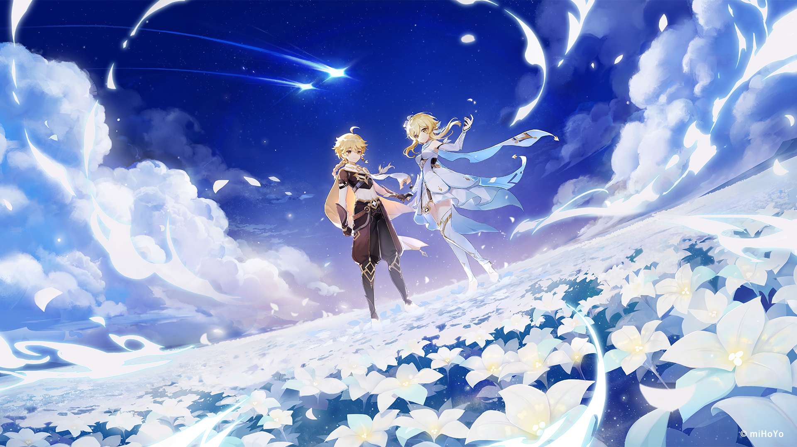
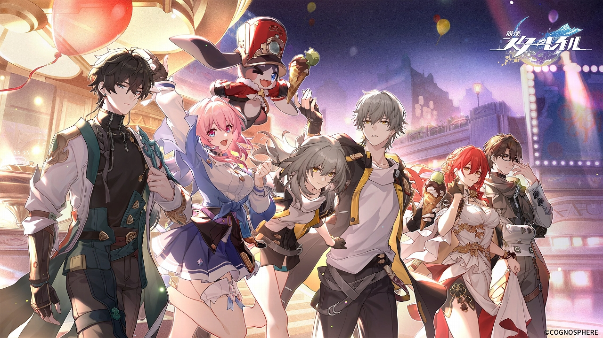
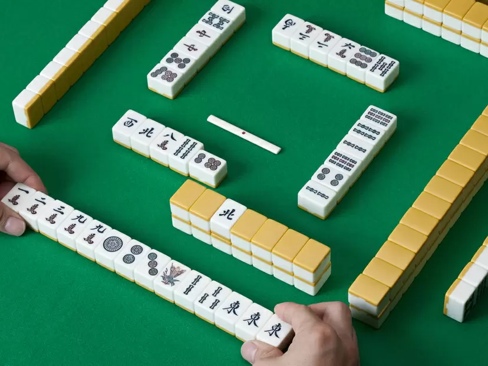

こんにちは！！！！！！！
このサイトでは、私の好きなものを紹介しています！
どうぞお楽しみください！！！
私の好きなもの
・好きなゲーム
原神は、広大なオープンワールドを舞台にしたアクションRPGです。プレイヤーは、様々なキャラクターを操作して、冒険を進め、謎を解き明かしていきます。美しいグラフィックと自由度の高いゲームプレイが特徴で、探索や戦闘、パズル解きなど、様々な要素を楽しむことができます。
・好きなゲーム２
崩壊スターレイルは、オリジナルキャラクターたちが活躍する戦略シミュレーションRPGです。プレイヤーはキャラクターの編成やアビリティの活用などを考えながら、戦略的なバトルを楽しむことができます。ゲーム内ではストーリーも充実しており、豊富なコンテンツで楽しめる一作です。
・最近の趣味
麻雀は、３人や４人で行う伝統的な日本の卓上ゲームです。手牌を組み合わせて役を作り、相手よりも高い得点を競います。麻雀は戦略性や計算能力を駆使するゲームで、日本だけでなく世界中で愛されています。